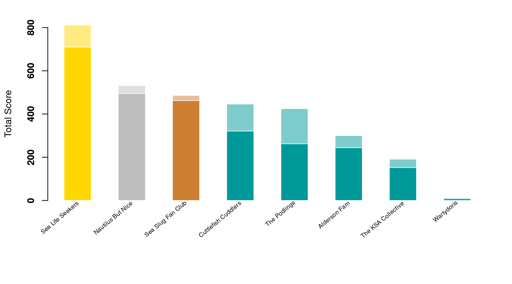

Content
You can view all the wildlife we recorded at this event on iNaturalist here.


| Records | 358 |
| Species | 71 |
| Verified species | 63 |
| Observers | 14 |
| Verified score | 4121 |
| Unverified score | 4701 |
| Top species | Acanthocardia paucicostata - poorly-ribbed cockle |
| Top species score | 69 |
Congratulations to Sea Life Seekers for taking the gold medal in this BioBlitz Battle! And well done to everyone for a great game and some fantastic wildlife finds.

| Species | Potential Score | Confirmed Score | |
|---|---|---|---|
| heathygrace1234 | 43 | 695 | 627 |
| eveahh | 42 | 635 | 600 |
| snowygherkins | 37 | 532 | 495 |
| ian-creasey | 30 | 446 | 321 |
| Emma Turner | 25 | 399 | 262 |
| Kerrie | 17 | 300 | 244 |
| Kitty Turner | 10 | 246 | 226 |
| moleandtoad | 15 | 243 | 184 |
| mbray61 | 10 | 168 | 168 |
| Ben | 14 | 255 | 166 |
| Kate A | 12 | 191 | 152 |
| One World | 13 | 197 | 123 |
| katshaker88 | 7 | 84 | 77 |
| seagrassmeadow | 2 | 12 | 8 |
A total of 2 species with a rarity score of 69 or higher have verified records:


Community verified records only
Click any image to view the original photo and licence details on iNaturalist.
| Name | Rarity Score | |
|---|---|---|

|
Nemertea - Ribbon Worms | 22 |

|
Dendrodoa grossularia - Baked Bean Ascidian | 27 |

|
Styela clava - Stalked Sea Squirt | 31 |

|
Taurulus bubalis - Longspined Bullhead | 13 |

|
Tritia reticulata - Netted Dogwhelk | 13 |

|
Buccinum undatum - Common Whelk | 8 |

|
Ocenebra erinaceus - European Sting Winkle | 15 |

|
Nucella lapillus - Atlantic Dogwhelk | 8 |

|
Littorina littorea - Common Periwinkle | 8 |
| Crepidula fornicata - Common Atlantic Slippersnail | 11 | |

|
Euspira catena - Large Necklace Shell | 18 |
| Patella vulgata - Common European Limpet | 8 | |
| Aeolidia filomenae | 20 | |

|
Steromphala umbilicalis - Purple Topshell | 9 |

|
Steromphala cineraria - Grey Topshell | 11 |

|
Lepidochitona cinerea - Grey Mail-shell | 10 |

|
Acanthochitona crinita - Bristly Mail-shell | 25 |
| Sepia officinalis - European Common Cuttlefish | 10 | |

|
Cerastoderma edule - Common Cockle | 9 |

|
Acanthocardia paucicostata - poorly-ribbed cockle | 69 |
| Acanthocardia echinata - Prickly Cockle | 16 | |

|
Mercenaria mercenaria - Northern Quahog | 40 |

|
Ruditapes philippinarum - Japanese Littleneck | 23 |

|
Venerupis corrugata - Pullet Carpet Shell | 15 |

|
Petricolaria pholadiformis - False Angelwing | 30 |

|
Solen marginatus - Grooved Razor Shell | 36 |

|
Barnea candida - White Piddock | 26 |
| Pholas dactylus - Common piddock | 26 | |

|
Magallana gigas - Pacific Oyster | 11 |
| Ostrea edulis - European Flat Oyster | 11 | |

|
Aequipecten opercularis - Queen scallop | 18 |

|
Pecten maximus - Great Scallop | 14 |

|
NA | NA |
| Mytilus edulis - Blue Mussel | 9 | |

|
Ammothea hilgendorfi - Hilgendorf’s Sea Spider | 69 |

|
Austrominius modestus - Beaked Barnacle | 14 |

|
Chthamalus montagui - Montagu’s Stellate Barnacle | 15 |
| Balanus crenatus - Wrinkled Barnacle | 23 | |

|
Carcinus maenas - European Green Crab | 7 |

|
Necora puber - Velvet Swimming Crab | 9 |
| Eulalia clavigera - Emerald green paddle worm | 16 | |

|
Spirobranchus triqueter - Keeled Tubeworm | 14 |

|
Lanice conchilega - Sand Mason Worm | 14 |
| Anemonia viridis - snakelocks anemone | 8 | |

|
Actinia equina - Atlantic Beadlet Anemone | 8 |

|
Urticina felina - Dahlia Anemone | 13 |

|
Hymeniacidon perlevis - crumb-of-bread sponge | 12 |

|
Halichondria panicea - Bread-crumb Sponge | 15 |
| Flustra foliacea - Hornwrack | 14 | |

|
NA | NA |

|
Crambe maritima - sea kale | 8 |
| Ulva intestinalis - Gutweed | 9 | |

|
Ulva lactuca - Broadleaf Sea Lettuce | 10 |

|
Osmundea pinnatifida - Pepper Dulse | 14 |

|
Dumontia contorta - Worm Weed | 28 |

|
Chondrus crispus - Irish Moss | 10 |

|
Corallina officinalis - Common Coralline | 9 |

|
Hildenbrandia rubra - rusty rock | 28 |

|
Sargassum muticum - Japanese Wireweed | 10 |

|
Fucus serratus - Saw Wrack | 8 |

|
Fucus distichus - Rockweed | 27 |

|
Fucus spiralis - Spiral Wrack | 9 |

|
Saccharina latissima - Sugar Kelp | 12 |